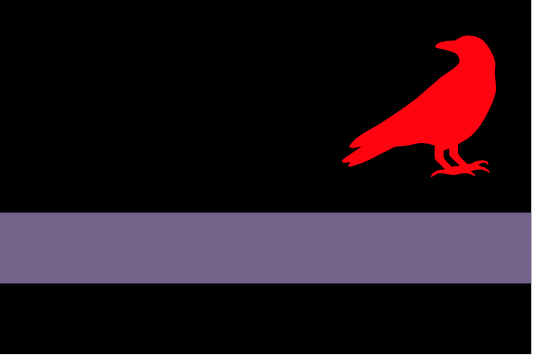

Zarovia

Zarovia is a nominally independent Princedom to the south of the Dracean Intercoastal Republic. It was once a member state, Central Scutia, but broke away when its ruler Strahd Drakul began gaining mysterious powers. The DIR largely respects Zarovia's independence and stays out of its affairs, mostly relieved to have a buffer at their most open border with Ordo'Atkan as Prince Strahd's bloody reputation makes him one of the few figures whom the Atkani fear.
Contents
🡐 PlacesVampires Notable Zarovians